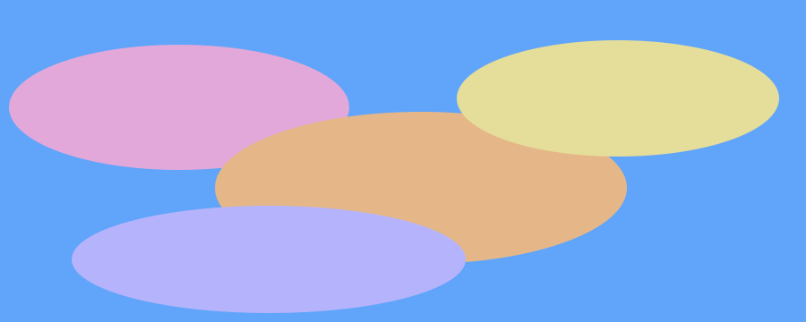

Prepare-se para ser transportado para um mundo de cores vibrantes e texturas exuberantes com esta imagem que evoca a beleza e o dinamismo de um céu repleto de nuvens coloridas. As pinceladas ousadas e expressivas criam uma composição cheia de movimento e energia, onde tons de rosa, laranja, amarelo, azul e roxo se misturam e se fundem, criando uma sinfonia visual cativante. As formas orgânicas e fluidas das nuvens parecem pulsar com vida, transmitindo uma sensação de otimismo, alegria e liberdade. Deixe-se inspirar pela explosão de cores e pela vitalidade desta obra, que convida a explorar a imaginação e a abraçar a beleza que nos rodeia, lembrando-nos que mesmo nos momentos mais sombrios, sempre há um arco-íris de possibilidades à nossa espera.
Notícias © 2089